公式BOOTH・販売開始！
缶バッジを買って、
ちょろりたちを応援！
キャラ久留米公式ショップで、ちょろりとちゃまるのランダム缶バッジが販売開始しました。
BOOTHでのご購入も、キャラ久留米でのふたりの応援につながります！
公式BOOTHで缶バッジを見る ▶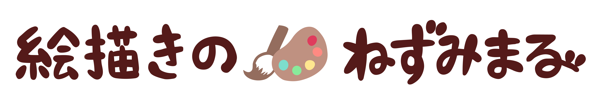
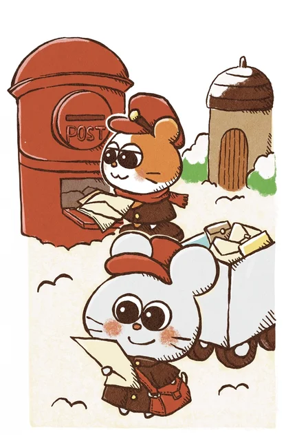
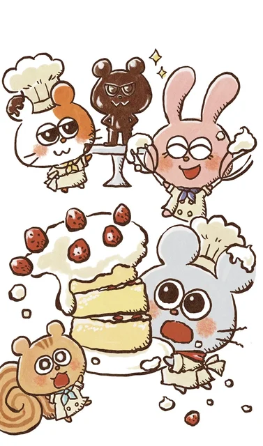
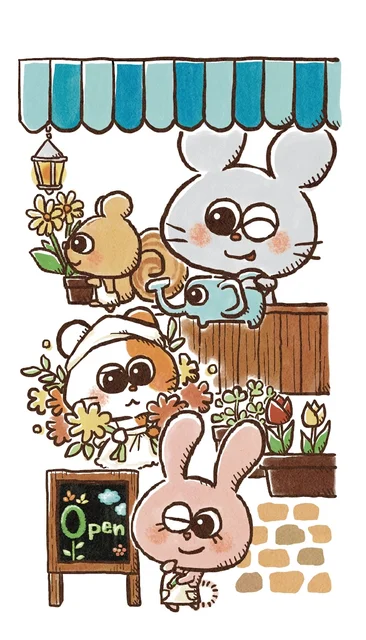
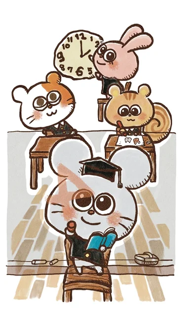
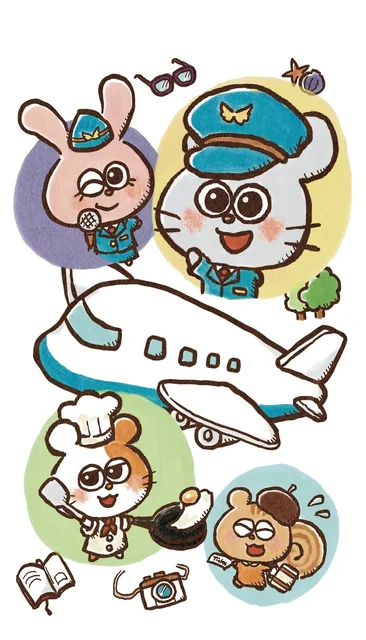
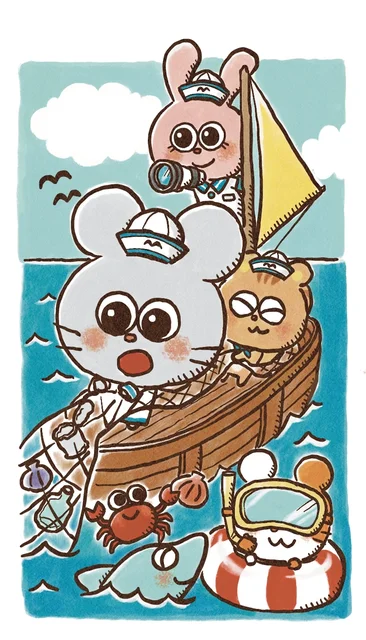
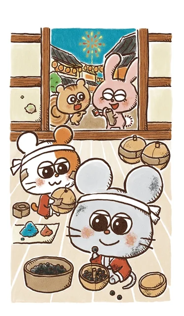
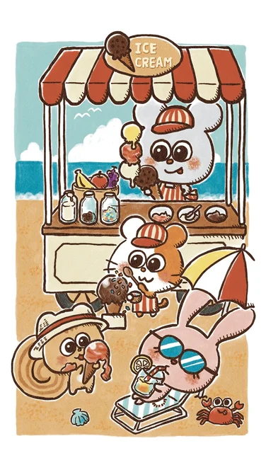
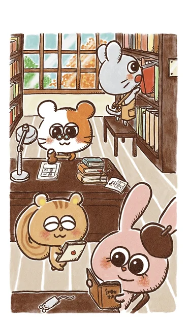
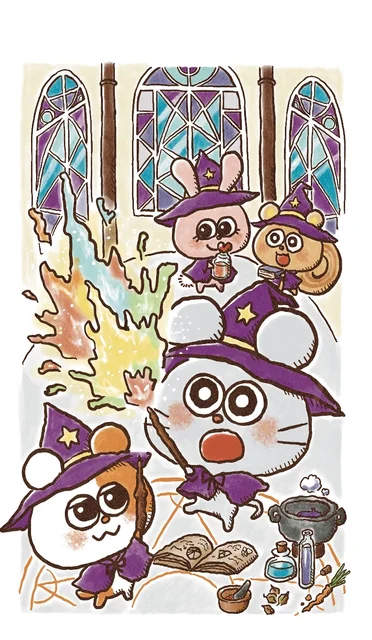
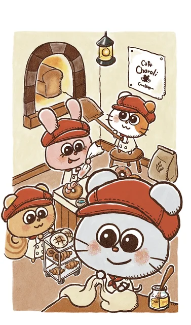
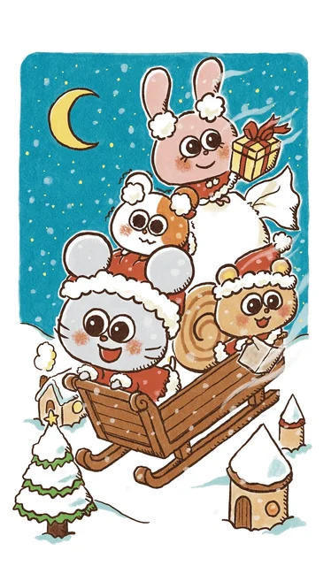
おえかきやさん・ねずみまる 公式ホームページ
あたたかくて、ちょっと楽しい。
まんまる寄り目のなかまたちと、
日々の小さな物語を描いています。
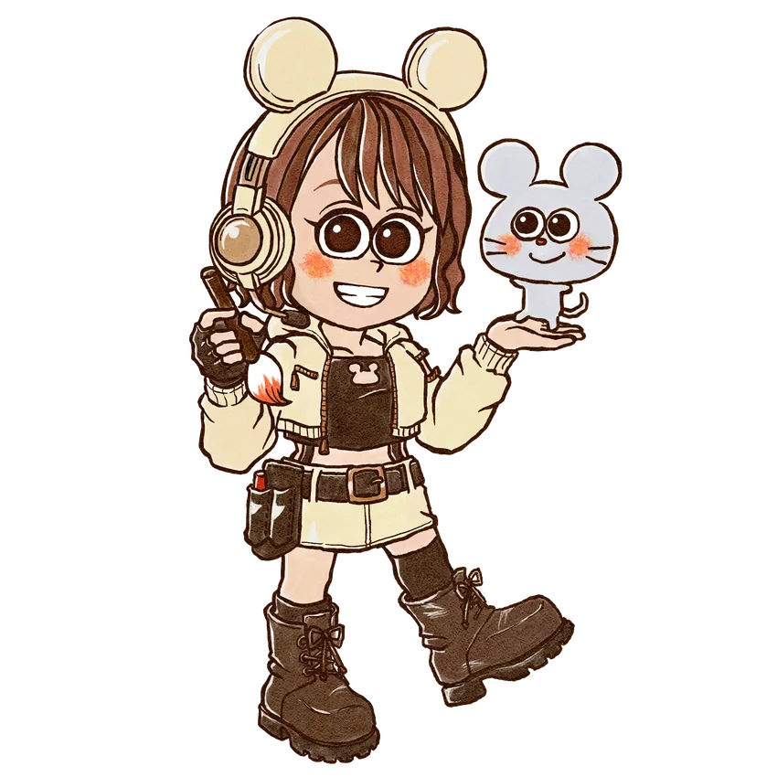
ABOUT ME
げっ歯目似の絵描き・ねずみまるです。
寄り目が特徴のキャラクターを描きます。
挿絵・漫画・間違い探し・アイコン・似顔絵・ロゴ・名刺・人物デフォルメなど。
ご依頼主さまの気持ちを汲んで、はやく描きあげるのが持ち味です。
EVENTS & NEWS
ちょろりたちに会える場所と、いま挑戦していること。
公式BOOTH・販売開始！
キャラ久留米公式ショップで、ちょろりとちゃまるのランダム缶バッジが販売開始しました。
BOOTHでのご購入も、キャラ久留米でのふたりの応援につながります！
公式BOOTHで缶バッジを見る ▶BASE・期間限定オンライン販売
まんがえほん「久留米ぐるり旅」や目印チャームなど、キャラ久留米開催記念のグッズを販売中です。
販売期間
期間限定BASEショップを見る ▶
部門1 ファイナリスト
ちょろりとちゃまるが部門1のファイナリストに！SNS反応・Web一般投票ともに3位をいただきました。久留米の街と公式BOOTHで、缶バッジの応援ガチャを販売中です。
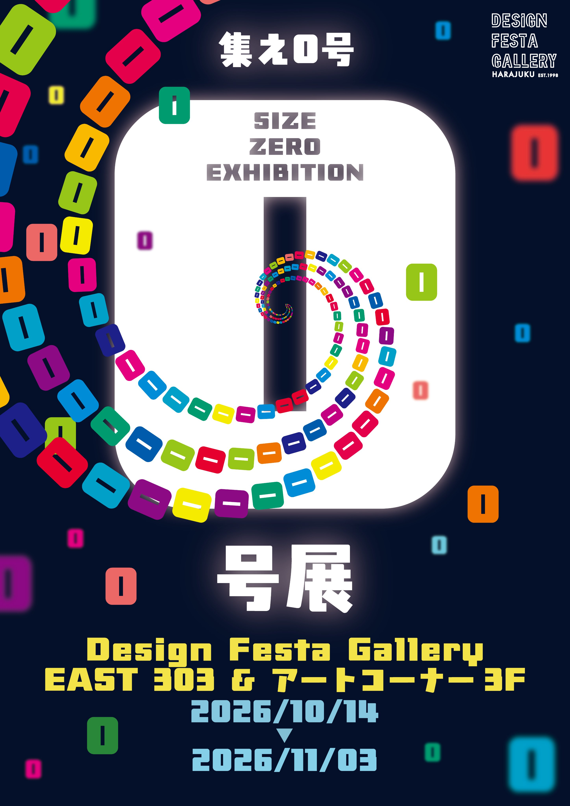
展示終了・ありがとうございました
片手にのるほどの小さなS0キャンバスに、ねずみのちょろりたちを描きました。手描きの作品3点を展示しました。ご来場ありがとうございました！
2026年11月8日更新。最新の日程・販売情報は各イベントの案内をご確認ください。
主な受賞・展示実績
ORIGINAL CHARACTER
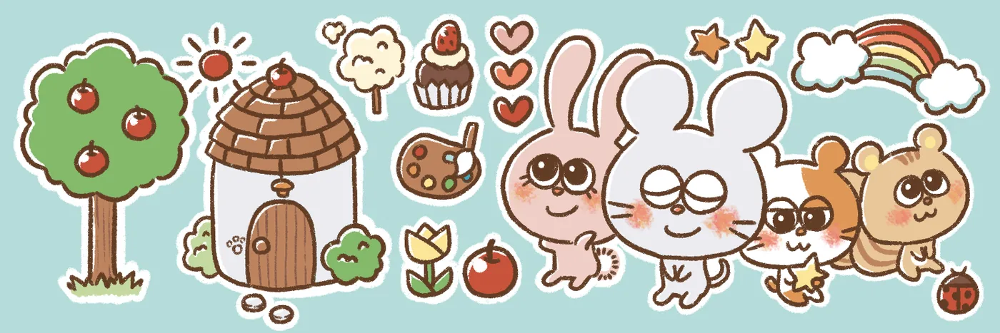
ちょろりと、ちゃまるの小さな世界
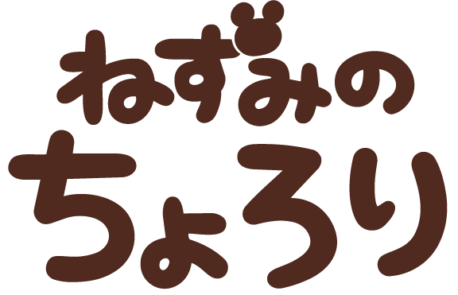
PORTFOLIO
気になるカテゴリから、作品をご覧ください。
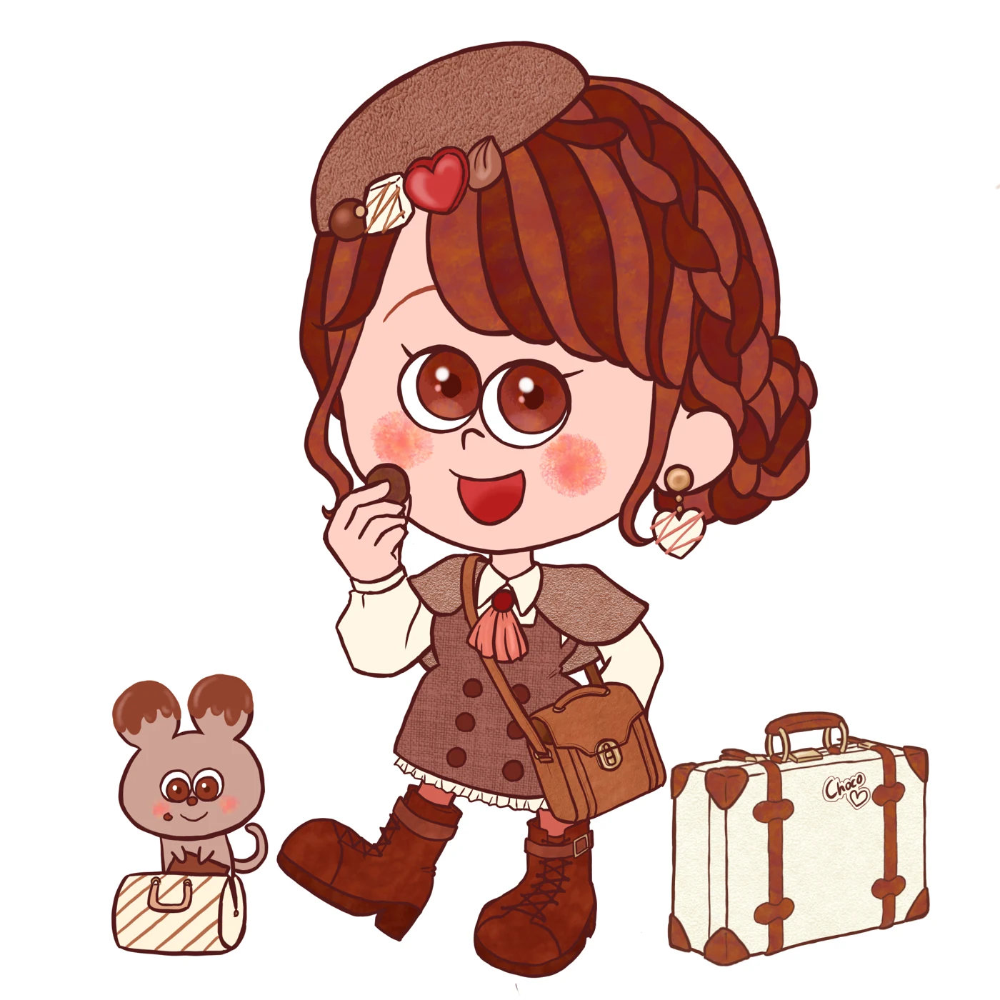
CHARACTER
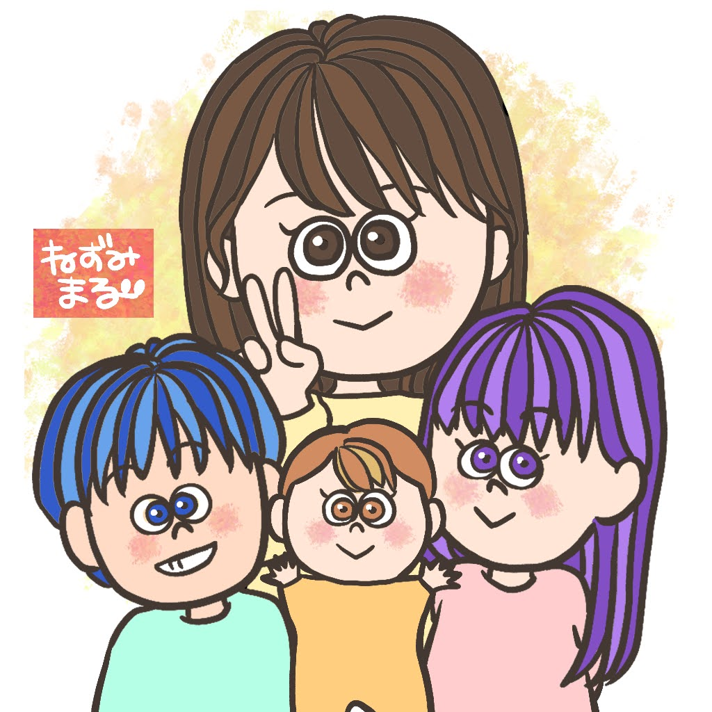
PORTRAIT
ILLUSTRATION & PUZZLES
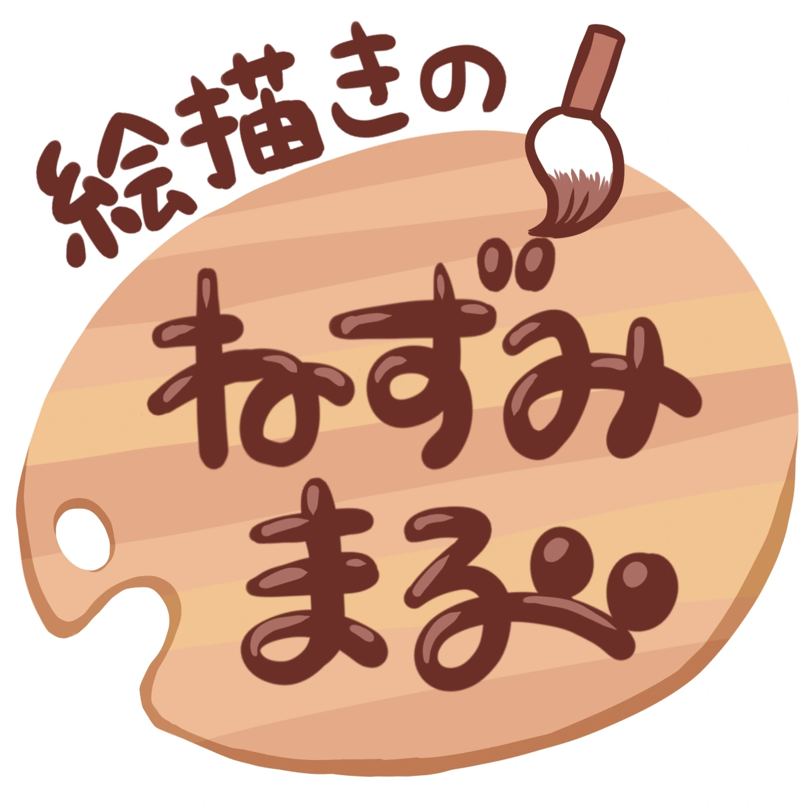
LOGO & DESIGN
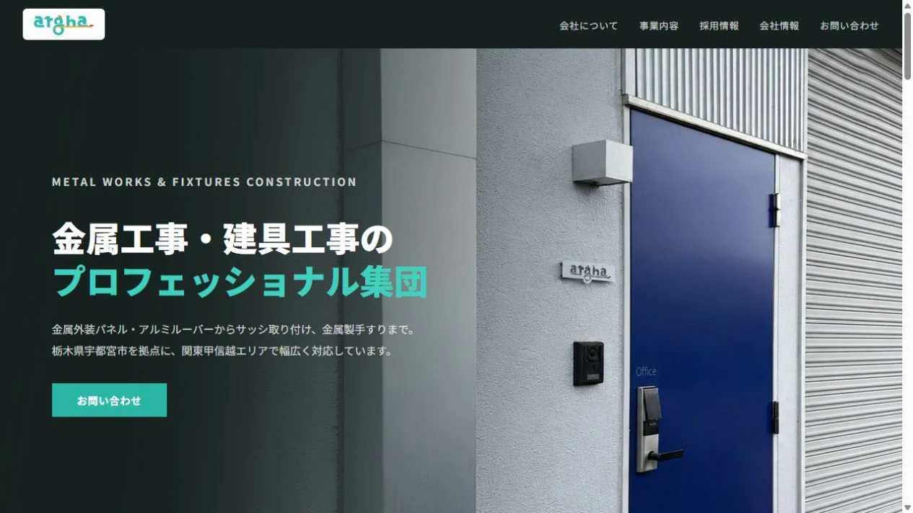
WEB DESIGN
COMICS & GAME ART
AI × HAND DRAWING
部分修正・キャラクター制作・デフォルメ化。修正前後がわかる事例をまとめました。
AI×手描きの制作事例を見る ▶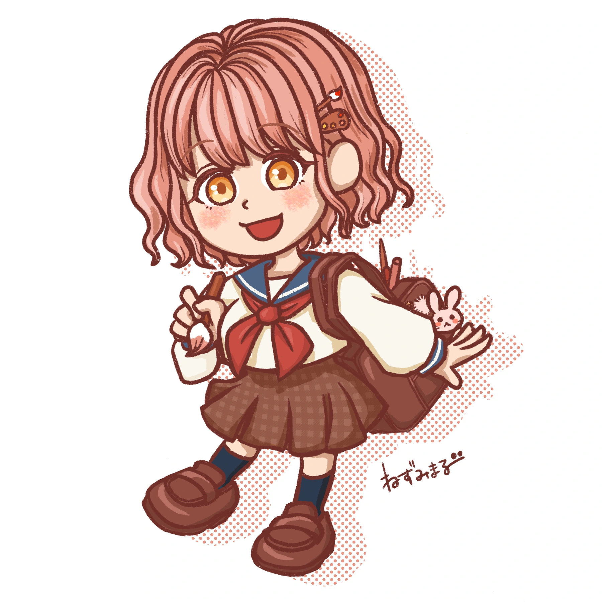
HISTORY
作品を通して出会えた、これまでの出来事。
受賞 MZDAO PRコンテスト Twitter部門 最優秀賞（1位）
25万人規模のコミュニティで開催
受賞 Cluster GAMEJAM2022 テーマ賞受賞作品のワールド制作・バナーを担当
受賞 7月 Nコレ大阪賞（夢想詩葉）
活動 イラストレーターとして独立開業
展示 渋谷PARCO、京セラドーム大阪、和歌山城天守閣などで作品を展示
展示 みやざきアートセンター、松本市立博物館、世田谷美術館などで作品を展示
展示 JR山手線 新橋駅・原宿駅・品川駅で作品を展示
掲載 書籍『CUT 2024年度版』に掲載
詳しい活動・展示情報は リットリンク にまとめています。
PROFILE
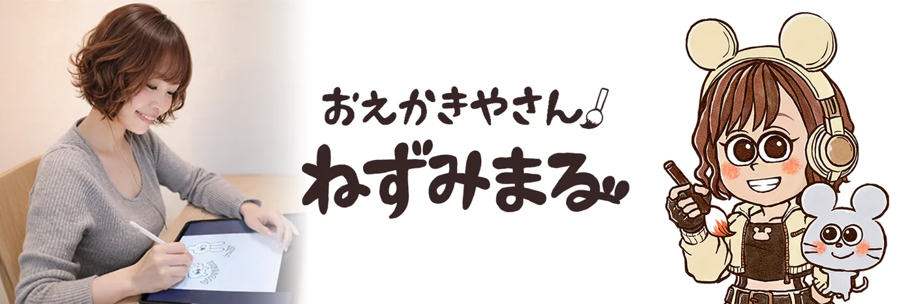
はじめまして、絵描きのねずみまるです。
キャラクターや似顔絵、挿絵、デザインを通して、伝えたい気持ちをあたたかい一枚にしています。ご相談の段階から、いっしょに形を考えることを大切にしています。
いっしょに作る相談をするFOLLOW & LINKS
新しい作品や活動は、まずXでお知らせしています。
LET’S CREATE TOGETHER
キャラクター・似顔絵・イラスト・デザイン。
まずは、お話を聞かせてください。